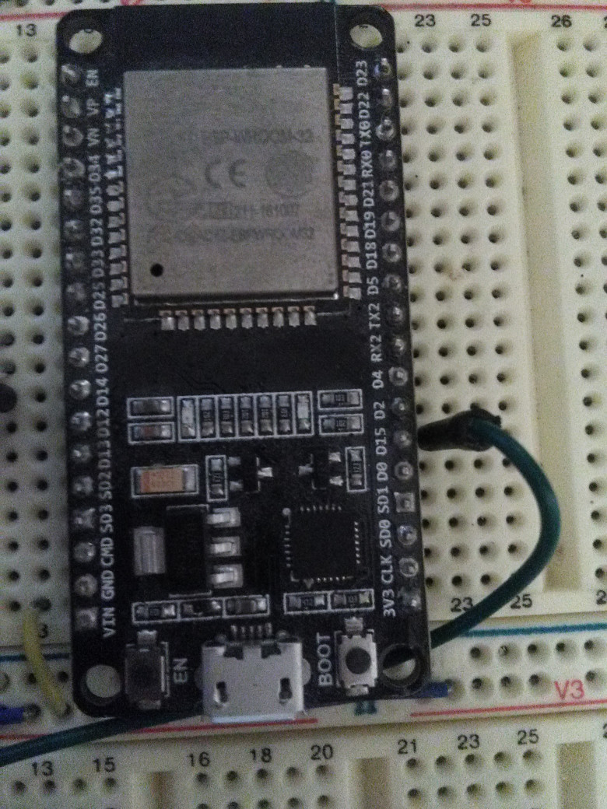
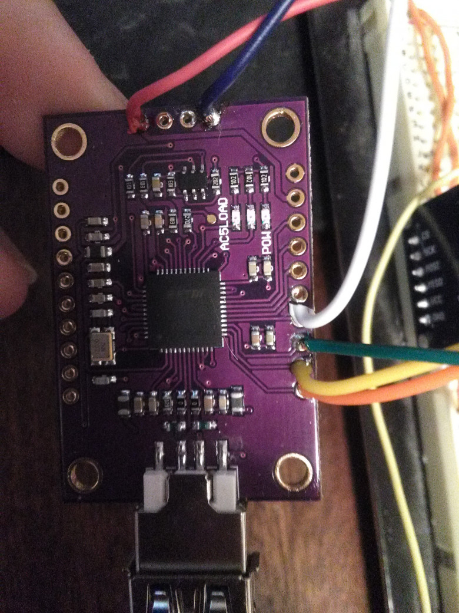
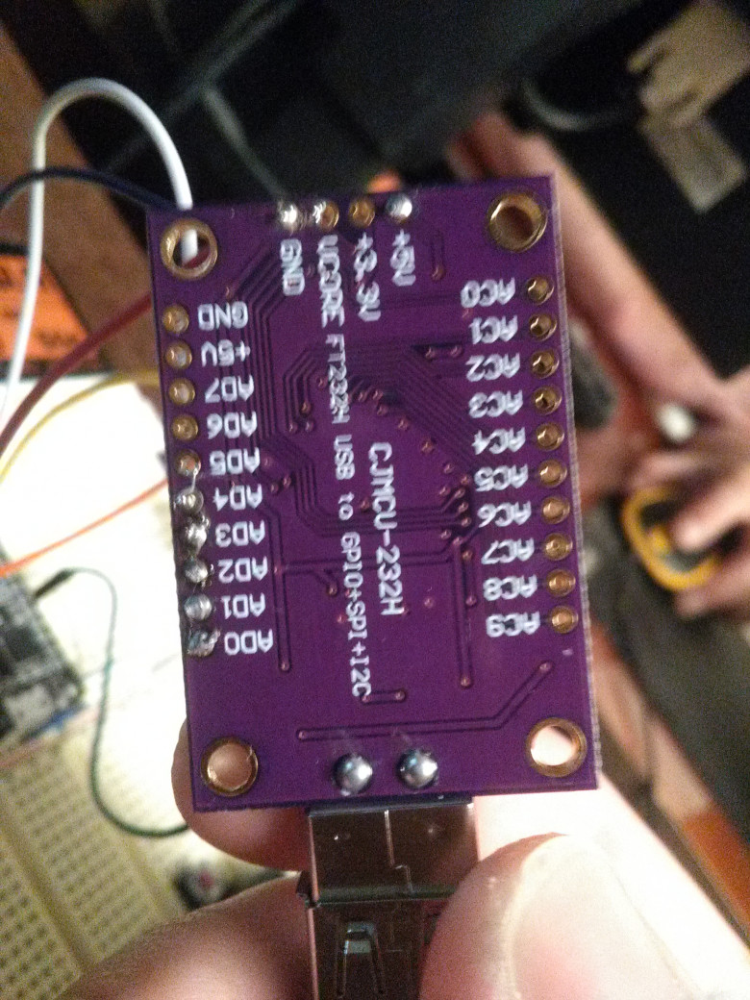

Бюджетный отладчик к ESP-32 и его
настройка
4 мин24K
Отладка*Программирование микроконтроллеров*
Туториал
Недавно при написании библиотеки к ESP-32 возникла необходимость ловить дедлоки,
которые возникали иногда из-за моей криворукости, что породило необходимость
покупки платы-отладчика с интерфейсом JTAG. Что из этого вышло — читайте под
катом.
Наша главная героиня, а точнее — цель отладки:

Плата на основе чипа ESP-WROOM-32. Ссылку не дам, т. к. в том месте уже всё раскупили.
Теперь — сама плата отладки:


CJMCU FT232H
Не заморачивался и заказал на алиэкспрессе за 740,08 руб. вместе с доставкой ePacket. Плата приходит с неприпаянными ногами, что нам только на руку, поскольку они нам не нужны.
Набор проводов, 6 шт.: один конец паять, другой — к ESP-32.
Ещё очень рекомендую USB-удлинитель, без него будет туго…
Компьютер с (X)Ubuntu 18.04.
Тут можно смело ссылаться на доки самой esp-idf:
sudo apt-get install make libtool pkg-config autoconf automake texinfo libusb-1.0 libftdi1-2 git
git clone --recursive https://github.com/espressif/openocd-esp32.git # Или скачиваем релиз из https://github.com/espressif/openocd-esp32/releases
cd openocd-esp32
./bootstrap
./configure # Убеждаемся, что FTDI-based adapters включены
make -j6
sudo make install
Отдельно отмечу, что я ставил эту версию OpenOCD в систему (sudo make install), что неприемлемо, когда у вас разные OpenOCD для разных устройств.
На этом этапе я разделил конфиг для платы отладки и самой ESP-32. Получилось так:
board.cfg:
transport select jtag
adapter_khz 20000 # С этим можно поиграться
# set ESP32_ONLYCPU 1 # Только первое ядро
# set ESP32_RTOS none # Убрать поддержку RTOS
source [find target/esp32.cfg]
interface.cfg:
interface ftdi
ftdi_vid_pid 0x0403 0x6014
ftdi_layout_init 0x0c08 0x0f1b
Из-за проблем с правами мы не сможем получить доступ к USB-устройству. Это можно исправить одной строчкой правила udev:
echo 'SUBSYSTEM=="usb", ATTR{idVendor}=="0403", ATTR{idProduct}=="6014", GROUP="plugdev", MODE="0666"' | sudo tee /etc/udev/rules.d/99-JTAG.rules
sudo systemctl restart udev.service
sudo udevadm control --reload-rules
Кроме всего прочего, весьма удобен скрипт вроде такого:
openocd_command:
#!/bin/bash
echo "$@" | telnet localhost 4444
Он позволит быстро посылать команды напрямую демону OpenOCD. Но об этом — позже.
Подключаем плату CJMCU к ESP-32
Тут нам понадобятся провода и паяльник, без этого никак. Ниже приведена таблица, что к чему подключать и зачем.
|
Контакт CJMCU |
Назначение JTAG |
Контакт ESP-32 |
|
AD0 |
TCK |
13 |
|
AD1 |
TDI |
12 |
|
AD2 |
TDO |
15 |
|
AD3 |
TMS |
14 |
|
+5V |
VIN (читать подробно!) | |
|
+3.3V |
3V3 (читать подробно!) | |
|
GND |
GND (внезапно) |
Если вы не хотите тянуть от компа отдельный провод к ESP-32 devkit'у, то можно подключить +5V к VIN. Прошивка при этом будет идти через JTAG, что, как показал личный опыт, гораздо быстрее. Один минус этого варианта — нет возможности смотреть лог UART, но ИМХО отладчик напрочь убирает необходимость сего действия.
Как заметили в комментариях, на сам ESP-32 подавать 5V нельзя, только на devkit'ы. Если вам нужно отладить отдельный чип, можно запитаться от преобразователя самого CJMCU, подключив +3.3V на нём к 3V3 на ESP-32. Но про то, хватит ли мощности преобразователя, ничего не могу сказать, лучше возьмите отдельный источник питания. И да, подключать 5V и 3.3V одновременно не стоит.
При этом GND подключать обязательно всегда!
Запускаем OpenOCD так:
openocd -s 'куда вы кидали interface.cfg и board.cfg' -f interface.cfg -f board.cfg
Если всё прошло успешно, вам покажут что-то вроде этого:
Open On-Chip Debugger 0.10.0-dev (2018-08-22-14:47)
Licensed under GNU GPL v2
For bug reports, read
http://openocd.org/doc/doxygen/bugs.html
adapter speed: 20000 kHz
esp32 interrupt mask on
Info : ftdi: if you experience problems at higher adapter clocks, try the command "ftdi_tdo_sample_edge falling"
Info : clock speed 20000 kHz
Info : JTAG tap: esp32.cpu0 tap/device found: 0x120034e5 (mfg: 0x272 (Tensilica), part: 0x2003, ver: 0x1)
Info : JTAG tap: esp32.cpu1 tap/device found: 0x120034e5 (mfg: 0x272 (Tensilica), part: 0x2003, ver: 0x1)
Info : esp32: Debug controller was reset (pwrstat=0x5F, after clear 0x0F).
Info : esp32: Core was reset (pwrstat=0x5F, after clear 0x0F).
Info : Detected debug stubs @ 3ffb3134 on core0 of target 'esp32'
cpu0: Current bits set: BreakIn BreakOut RunStallIn
cpu1: Current bits set: BreakIn BreakOut RunStallIn
Это говорит о том, что всё заработало!
Важно: процесс OpenOCD должен крутиться всё время, пока вы заняты отладкой.
Тут есть целый ряд шагов, который прекрасно описан в официальной документации, и я их не буду повторять.
openocd_command 'program_esp32 абсолютный_путь/файл.bin 0x10000 verify'
Можете добавить это как цель сборки, поставив openocd_command кастомной командой, а в поле "имя цели" вписать аргументы (без кавычек).
На этом мой текущий опыт работы с данной системой заканчивается. Желаю плодотворной отладки (будем честны, приятной она не бывает)!
Теги:
Хабы:
+1578